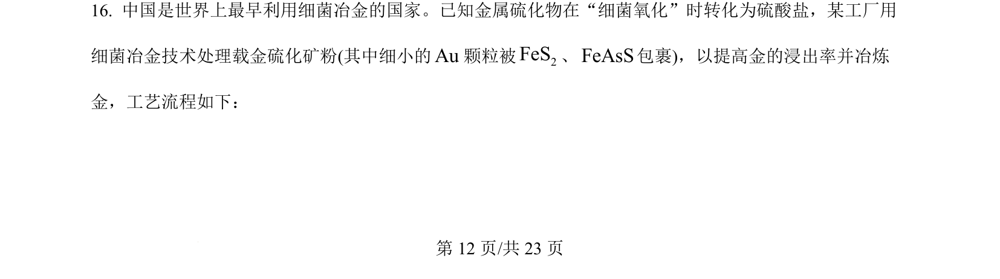
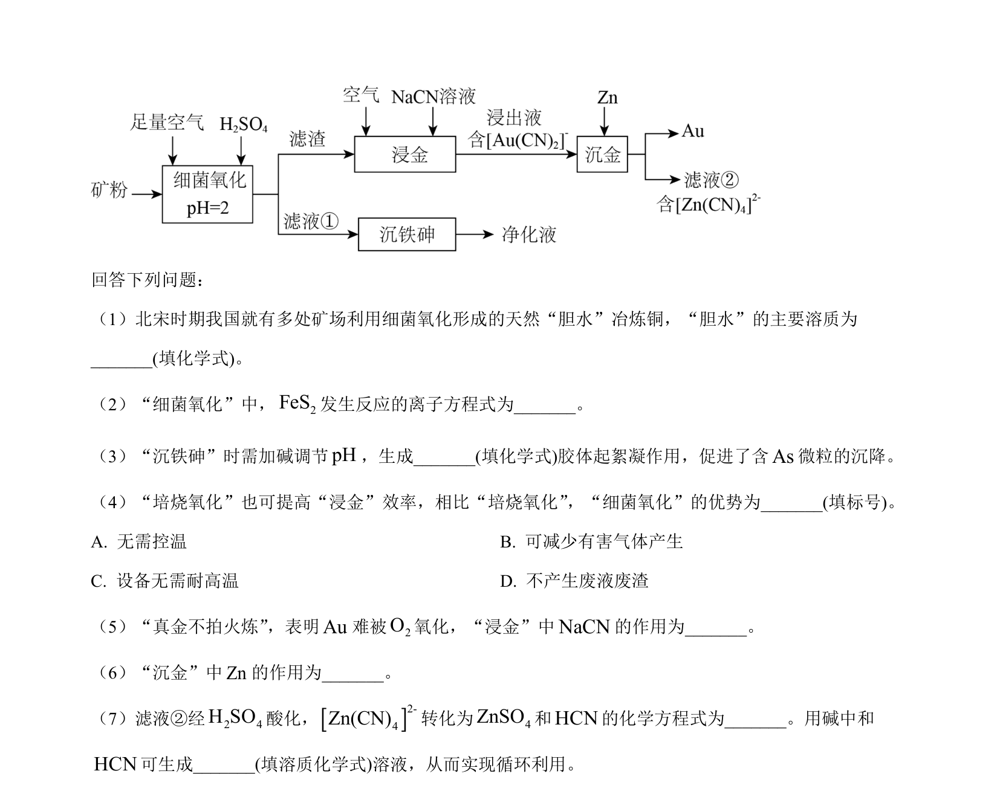
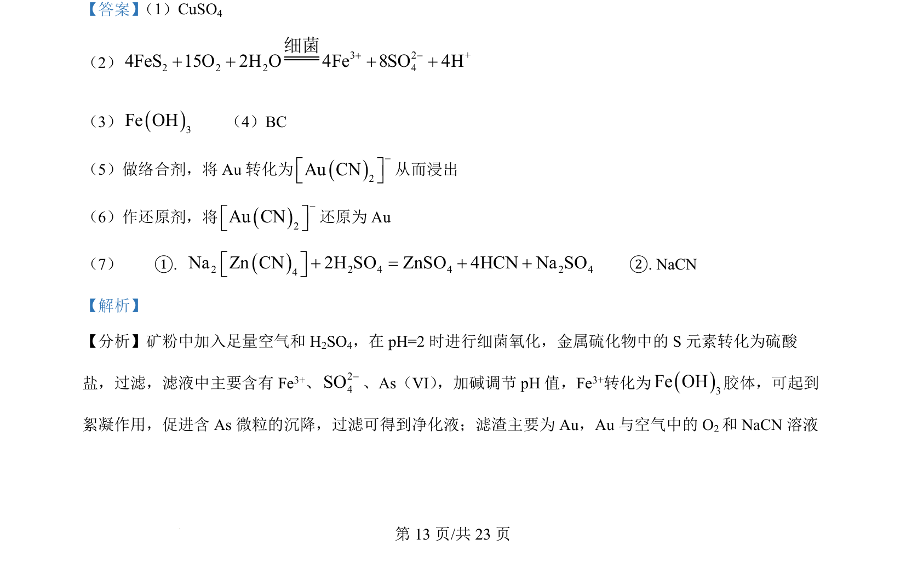
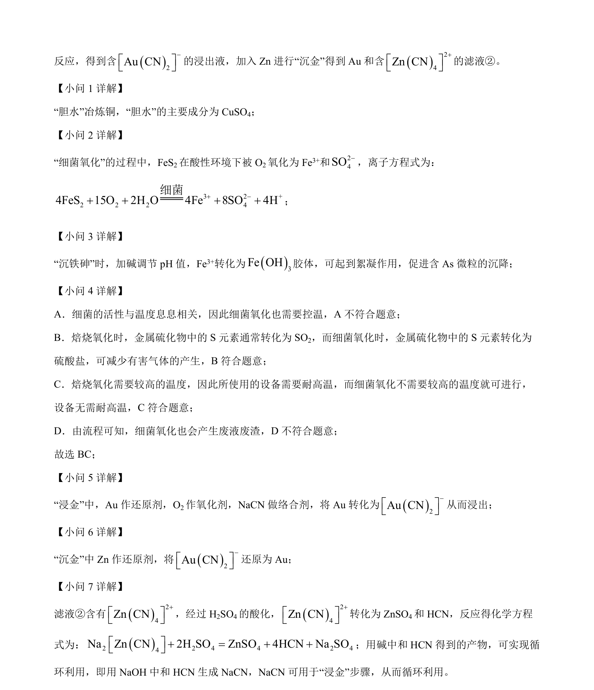

考点：铜的冶炼 离子方程式书写 胶体性质 反应条件控制
铜的冶炼
离子方程式书写
胶体性质
反应条件控制


该题以矿物加工流程为载体，考查铜的湿法冶炼、氧化还原离子方程式书写及胶体絮凝等原理。


📄 原 PDF 第 12 页：素材/真题/吉林/2008-2024·（吉林）化学高考真题/2024年高考化学试卷（辽宁）（解析卷）.pdf
素材/真题/吉林/2008-2024·（吉林）化学高考真题/2024年高考化学试卷（辽宁）（解析卷）.pdf